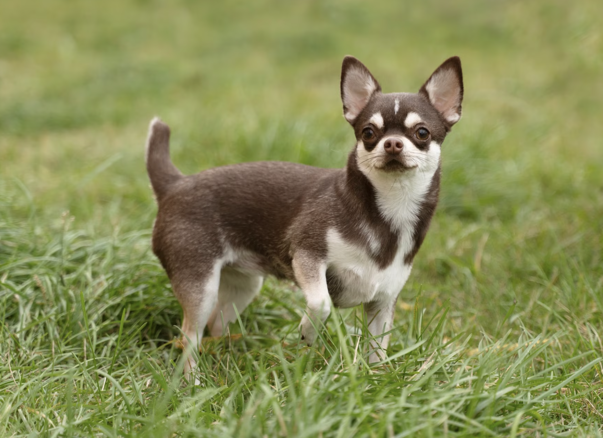
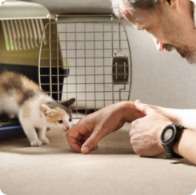

Guide til
Adoption
Adoption af en hund eller kat er en betydningsfuld beslutning, der
kan ændre både dit liv og det pågældende kæledyrs. Her er en guide
til adoption, der kan hjælpe dig med at træffe den bedst mulige
beslutning:
1. Overvej dine behov og livsstil:
Start med at evaluere din egen livsstil og boligforhold. Hvor meget
tid har du til rådighed for at tage dig af et kæledyr? Har du plads
og økonomisk stabilitet til at sørge for et dyr? Det er vigtigt at
vælge et kæledyr, der passer til din hverdag.
2. Vælg den rigtige race eller type:
Hvis du beslutter dig for at adoptere en racekat eller -hund, skal
du undersøge racens karakteristika for at sikre, at den passer til
dine behov. Overvej størrelse, temperament og aktivitetsniveau.
3. Sørg for uddannelse og træning: Uanset om du adopterer en hvalp
eller en voksen hund eller kat, er træning og uddannelse vigtige
aspekter af at skabe en sund og glad relation mellem dig og dit
kæledyr.
4. Vær forberedt på forpligtelsen: Adoption indebærer et langvarigt
engagement. Vær sikker på, at du er klar til at tage ansvar for dit
kæledyr i hele dets liv.
5. Nyd glæden ved at have en firbenet ven: Efter adoptionen kan du
se frem til en kærlig og livslang relation med din nye hund eller
kat. Husk at give dem masser af kærlighed og omsorg, så vil de
berige dit liv på utallige måder.
Dyr til adoption

Mis
Køn: hun
Alder: 5 år

Pjuskey
Køn: hun
Alder: 1,5 år

Gonzo
Køn: han
Alder: 1 år

Johanne
Køn: hun
Alder: 4 år
Se 40+ dyr

Adoptionsprocessen
1. Læs om adoptionsdyrene på vores hjemmeside

2. Kom forbi i vores åbningstid eller
book et møde
3. Udfyld ansøgning og afvent svar
4. Hvis det er det rette match, aftales der tid til adoption
Husk forsikring
Tilkøb af forsikring til din hund eller kat har flere fordele,
herunder:
-
Dækning af dyrlægeregninger i tilfælde af sygdom eller skade.
-
Mulighed for at få forebyggende pleje dækket, herunder
vaccinationer og tandpleje.
- Omkostningsdækning for medicin og behandlinger.
- Beskyttelse af uforudsete dyrlægeomkostninger.
-
Mulighed for at vælge specialiseret pleje uden økonomisk
bekymring.
Undersøg omhyggeligt forskellige forsikringsudbydere og planer for
at finde den bedste dækning til dit kæledyr.
vi svarer på dine spørgsmål
Uanset om du har spørgsmål omkring ernæring, adfærd, sundhedspleje
eller blot ønsker generel rådgivning om dyrepleje, er du velkommen
til at kontakte os. Vi er dedikerede til at dele vores viden og
erfaring for at sikre, at du og dit kæledyr har et vidunderligt og
bekymringsfrit forhold.
Kontakt os